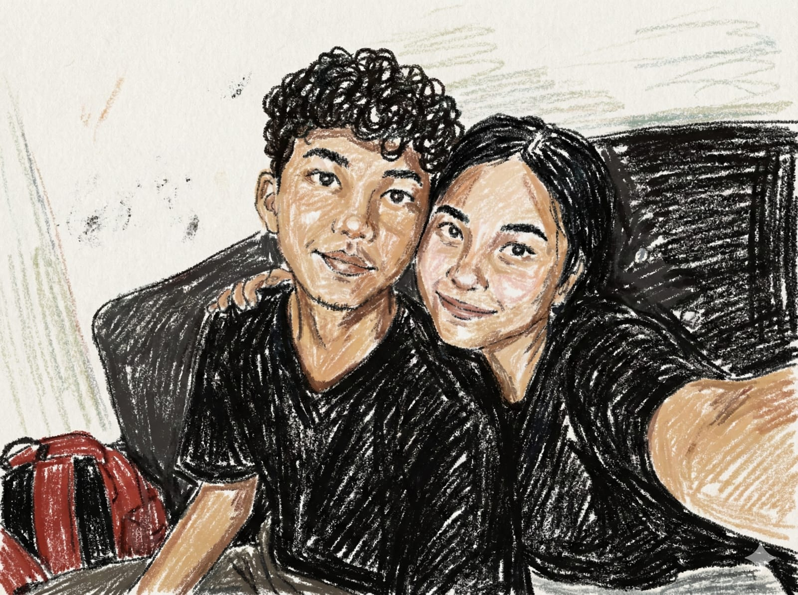
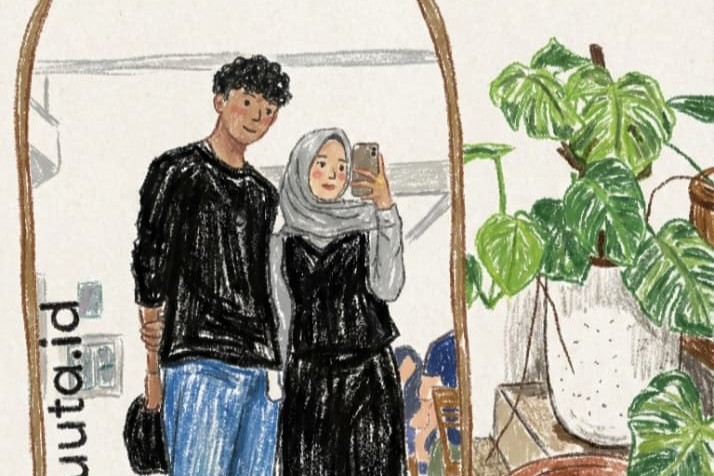

Aku tau kamu lagi ngambek, tapi pleasee... kasih aku waktu 1 menit aja buat ngejelasin.
Boleeh kan?

Inget ngga foto ini? Kita happy banget kan waktu itu? Aku nyesel banget udah bikin senyum kamu ilang.
Aku beneran ngga bermaksud gitu. Maafin aku, please?
Aku janji bakal perbaikin sikap aku. Kita baikan ya?
Sayang banget sama kamu 🤍

Makasih banyak ya udah dimaafin. Kamu emang yang terbaik! Siap-siap ya, habis ini aku traktir makanan Eskrim!